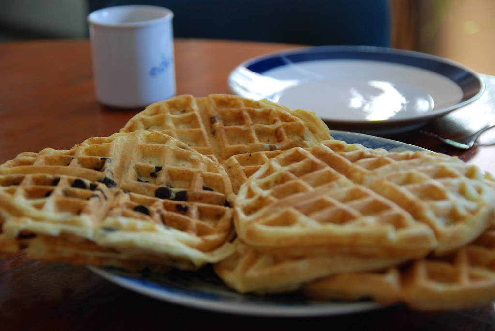

Waffles
"Waffles" by jonathan mcintosh is licensed under CC BY-SA 2.0 

 .
.
Description
A traditional European waffle recipe that results in flaky, crisp, dough-y goodness. Great with hot-syrup, some cut fruit, and a house-spouse. Sunshine reflects really well on these culinary treats. Exercise consumption with caution: you may gain pounds.